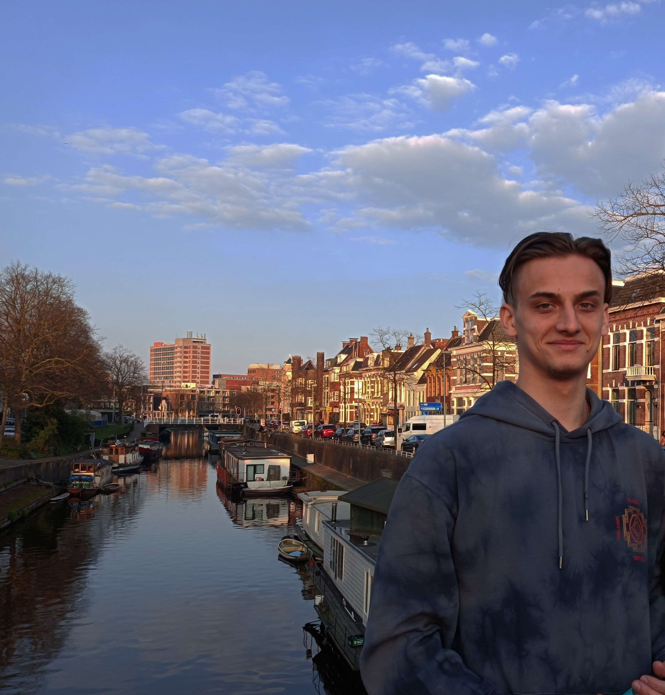

About Me

I am 20 years old, and I am a gaming enthusiast since I was about seven years old, when I started with games like Counter-Strike 1.6 and Minecraft. Since then, I started my journey of exploring new genres, getting to know new people, and tying up strong friendships that are still ongoing to this day.
During high school, I started to develop my passion for programming and editing. These four years helped me expand my skills with C++ and build a foundation of critical thinking. It was a fun ride, but I wanted more than just solving coding problems; I wanted to express my creativity by using this skill. Hence, I was deeply curious how one would use programming to create games; how could a bunch of lines of code create a beautiful experience on people's screens? Furthermore, I also started to get familiar with editing programs, such as Photoshop and Sony Vegas, by editing images and videos for fun and personal use. Over time, I got better and better at it and started to enjoy it more than ever, so much so that I had no problems spending hours continuously on a project.
Because I enjoyed programming, and that I was fairly experienced at it, I chose to study computer science in my home country, Romania. Unfortunately, I later realized that this study wasn't what I was looking for. Nonetheless, I found the courses where I had the opportunity to learn Python and the computing systems architecture by experimenting with x86 Assembly to be useful for further developing my critical thinking skills.
This is how I winded up at Hanze University of Applied Sciences. After almost finishing the first year and getting to experiment with programs used in the game industry and working with amazing people on group projects, I can certainly say that I found my passion.